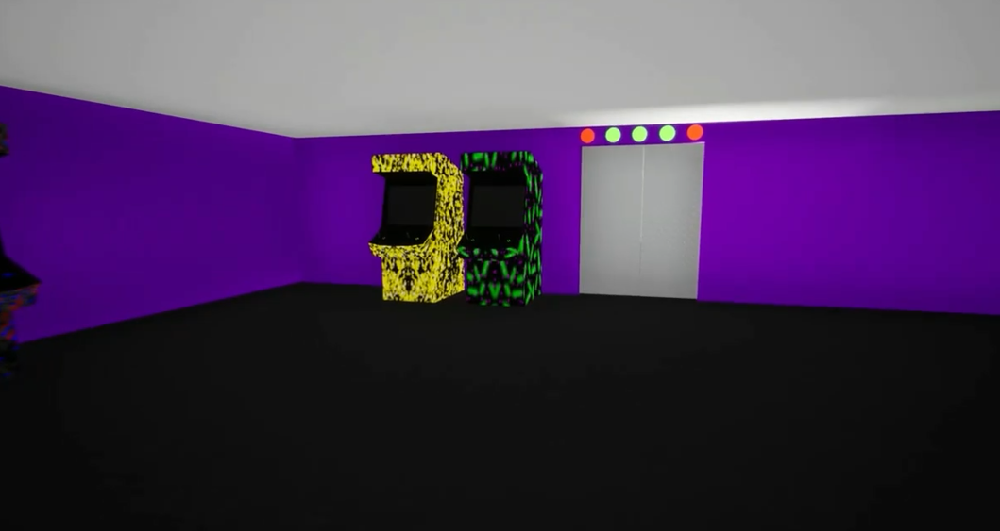

Epic MegaJam Submission
A project made to submit to the 2020 Epic MegaJam. It is a puzzle game that allows a player to rewind if mistakes are made.
- Java
- Spring Boot
- Concurrency

Demo

GIFs work great here.
Problem
In one week, we had to build a game inspired by the prompt: “It’s been a long time, but we’re not done yet.”"
Solution
- Built a room-based puzzle game where players interact with objects to unlock the exit.
- Implemented a rewind mechanic so players can undo mistakes and retry key moments.
- Modeled and textured a cohesive set of 3D assets to support each room’s theme and visual storytelling.
Code snippet
bool AICBMCraftingStationActor::CraftItems(UICBMInventoryItemDataAsset* CraftingItem)
{
AICBMHeroCharacter* HeroCharacter = Cast(ControllingActor);
if (HeroCharacter != nullptr)
{
for(FCraftingIngredients Ingredient : CraftingItem->GetRequiredIngredients())
{
HeroCharacter->GetInventoryComponent()->RemoveItemsFromInventory(Ingredient.RequiredIngredient, Ingredient.AmountRequied);
}
FTransform SpawnTransform = MeshComp->GetSocketTransform(SocketToSpawnCraftedItem);
FActorSpawnParameters SpawnParameters;
AActor* SpawnedActor = GetWorld()->SpawnActor(CraftingItem->GetInventoryItemClass(),
&SpawnTransform, SpawnParameters);
if (SpawnedActor != nullptr)
{
return true;
}
} What I learned
A tight deadline pushed me to plan the work like a small production project: define a minimal viable feature set, implement in small increments, and refactor toward cleaner structure as the game stabilized. I got better at isolating responsibilities, keeping logic predictable, and avoiding “quick fixes” that create future maintenance problems.